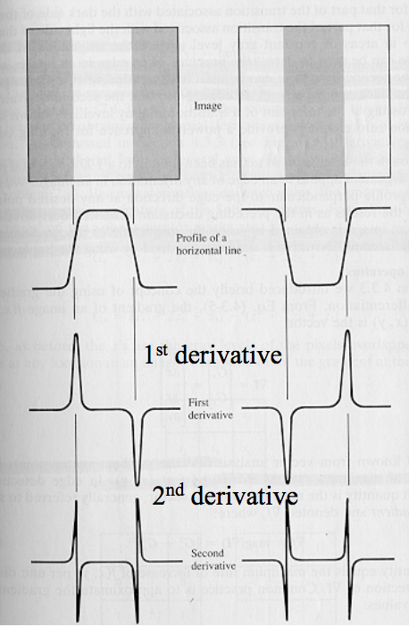

What is Computational Vision? Vision is the process of discovering from images what is present in the world,
and where it is.
The acquisition of knowledge about objects and events in the environment
through information processing
of
light emitted or reflected from objects
To make computers 'see'
"Automatic inference" of "properties" of "the world" from "images"
Automatic inference
Inference without (or minimal) human intervention
The world
The real unconstrained 3D physical world
Constrained/Engineered environments
Image
2D projection of the electromagnetic signal provided by the world
Properties
Geometric: shape, size, location, distance
Material : color, texture, reflectivity, transparency
Temporal: direction of motion (in 3D), speed, events
Illumination: light source specification, light source color
Symbolic: objects' class, object's ID
2 - Human Vision
Evolution of eyes:
Single cell - 1D capture of light
Multiple cell - Better direction resolution
A pinhole camera dilemma:
Wide aperture:
Bright images
Fuzzy images
Pinhole aperture:
Dim images
Sharp images
Solution: Use of light refraction and hence lenses
Refraction (Snell's Law) The wavelength changes, but wave crests can't be created or destroyed
at the interface, so to make the waves match up, the light has to change direction.
Pinhole Camera:
Basic geometry
Perspective projection
Image formation
f = the focal length (metres)
1/f = the power of the lens (dioptres)
Human eye has power of about 59 dioptres
1/f = 50 dioptres
f = 1/50 = 0.02m
As an object moves closer, the power of the lens must increase to accommodate
So if the object is infinitely far away 1⁄f = 1⁄∞
+ 1⁄0.02 = 50 dioptres
But if it is 1m away the lens must change shape to produce a sharp image 1⁄f
= 1⁄1 + 1⁄0.02 = 51 dioptres
The retina contains two types of photoreceptors that respond to light
Rods
≈120million
Extremely sensitive
Respond to single photon
Poor spatial resolution as they converge to same neuron within retina
Cones
≈6million
Active at higher light levels
Higher resolution as Signal processed by several neurons
2 types of Ganglion cells
On-center: stimulated when the center of its receptive field is exposed to light, inhibited when the surround
is exposed to light
Off-center: opposite reaction
Allows ganglion cells to also transmit information about difference in
firing rates of cells in the center and surround
Allows transmission of information about contrast
The size of the receptive field governs the spatial frequency of the information:
small receptive fields are stimulated by high spatial frequencies, fine detail
large receptive fields are stimulated by low spatial frequencies, coarse detail
Retinal ganglion cell receptive fields convey information about discontinuities
in the distribution of light falling on the retina; these often specify the edges of objects
Visual Pathway
Vision generated by photoreceptors in retina
Information leaves eye through optic nerve
There is a partial crossing of axons at the optic chiasm
After the chiasm, the axons are called the optic tract
Optic tract wraps around the midbrain to get to the lateral geniculate nucleus (LGN)
LGN axons travel to primary visual cortex at the back of the brain
3 - Edge Detection
Intensity Images
Data matrix where values represent intensities
Single matrix, with each element corresponding to one image pixel
Indexed Images
Consists of data matrix and a colormap matrix
Map is an m-by-3 array of doubles containing floating point values between 0 and 1
Each row of map specifies RGB components of a single color
Intensity gradients
Image is a function that maps coordinates to intensity - f(x,y)
Gradient of intensity is a vector with x and y components
Approximating the gradient
We use a 2x2 mask
Gx
-1
1
-1
1
Gy
1
1
-1
-1
For each mask of weights you multiply the corresponding pixel by the weight and sum over all pixels
Other edge detectors
Roberts
Gx
1
0
0
-1
Gy
0
-1
1
0
Sobel
Gx
-1
0
1
-2
0
2
-1
0
1
Gy
1
2
1
0
0
0
-1
-2
-1
Convolution
Computation of weighted sums of image pixels
For each pixel [i,j], the value of h[i,j] is calculated by translating the mask
to pixel [i,j] and taking the weighted sum of pixels in neighbourhood
Steps:
Take image
Convolve mask with image for each direction
Calculate Gx and Gy
Calculate magnitude (using Pythagoras' theorem)
Filtering
We can detect edges by calculating intensity change (gradient) across image
This is implemented using the idea of filtering
4 - Noise Filtering
Noise
We need to remove noise
There are many noise filters
Most can be implemented using convolution
e.g. Mean filter - this is a linear filter
The most widely used is Gaussian filtering
Sequenced filters
We can replace a 2D Gaussian filter with 2, 1D Gaussian filters in sequence
Efficiency and performance
Reading: Laplacian, Laplacian of Gaussian, Gaussian (Canny) Edge detection and Thresholding
5 - Colour
Objects selectively absorb some wavelengths and absorb others
Human retinas contain 3 different kinds of cones to give us the ability to distinguish different
forms of same objects
Colour mixing
Trichromatic (three colour) theory: eye's 3 different types of receptors sensitive
to different hues. Any colour can be produced by appropriate mixing of the 3 primary colours
Retina contains approximately equal numbers of red and green cones, but only 8% of blue
Theory explains:
How we discriminate wavelengths 2nm in difference
How we can match a mixture of wavelengths to a single colour
Some types of colour blindness
Does NOT account for colour blending
Some colour blend while others don't
Primary colours: Yellow, Blue, Red and Green
Trichromatic theory cannot explain why yellow is a primary colour
Opponent Process Coding
Neurons respond to pairs of primary colours
Some respond in centre-surround fashion
Response characteristics determines by appropriate ganglion cells connections
6 - Advanced Edge Detection
What causes intensity changes?
Geometric events
surface orientation (boundary) discontinuities
depth discontinuities
colour and texture discontinuities
Non-geometric events
illumination changes
specularities
shadows
inter-reflections
Edge Descriptors
Edge direction
perpendicular to the direction of maximum intensity change (i.e. edge normal)
Edge strength
related to the local image contrast along the normal
Edge position
the image position at which the edge is located
Main Steps of Edge Detection
Smoothing
suppress as much noise as possible, without destroying true edges
Enhancement
apply differentiation to enhance the quality of edges (i.e. sharpening)
Thresholding
determine which edge pixels should be discarded as noise and which should be kept
Localisation
determine the exact edge location
sub-pixel resolution might be required for some applications to estimate
the location of an edge to better than spacing between pixels
Edge Detection Using Derivatives
Often points that lie on an edge are detected by:
Detecting the local maxima or minima of 1st derivative
Detecting the zero-crossings of the 2nd derivative

Practical Issues
Noise suppression-localisation tradeoff
Smoothing depends on mask size
Larger mask sizes reduce noise, but worsen localisation (i.e. add uncertainty to the location
of the edge) and vice versa
Choice of threshold
Criteria for Optimal Edge Detection
Good detection
Minimise the probability of false positives (i.e. spurious
edges)
Minimise the probability of false negatives (i.e. missing
real edges)
Good localisation
Detected edges must be as close as possible to the true edges
Single response
Minimise the number of local maxima around the true edge
Canny edge detector
Canny has shown that the first derivative of the Gaussian closely approximates
the operator that optimises the product of signal-to-noise ratio and localisation
Hysteresis Thresholding
Standard thresholding
Can only select "strong" edges
Does not guarantee "continuity
Hysteresis thresholding uses two thresholds:
low threshold - tl
high threshold - th (usually th = 2tl)
Making the assumption that important edges should be along continuous curves in the image allows us to
follow a faint section of a given line and to discard a few noisy pixels that do not constitute a line
but have produced large gradients.
We begin by applying a high threshold. This marks out the edges we can be fairly sure are genuine.
Starting from these, using the directional information derived earlier,
edges can be traced through the image.
While tracing an edge, we apply the lower threshold, allowing us to trace faint
sections of edges as long as we find a starting point.
7 - Hough Transform
So far we have only found edge points, not edge segments
The Hough transform is a common approach to finding parameterised line segments
The basic idea:
Each straight line in this image can be described by an equation
Each white point, if considered in isolation, could lie on an infinite
number of straight lines
In the Hough transform each point votes for every line it could be on
The lines with the most votes win
Any line can be represented by two numbers
The yellow line will be represented by (w,Φ) In other wods we define it using:
a line from an agreed origin
of length w
at angle Φ to the horizontal
So we can represent any line in the image space as a point in the plane defined by (w,Φ)
This is called Hough Space
One point in image space corresponds to a sinusoidal curve in houghspace
Two points correspond to two curves in Hough space
The intersection of those two curves has "two votes"
This intersection represents the straight line in image space that passes through both points
There are generalised versions for ellipses, circles
For the straight line transform we need to supress non-local maxima
The input image could also benefit from edge thinning
Single line segments not isolated
Will still fail in the face of certain textures
Circle Hough Transform
Can be used to determine parameters of a circle when a number of points that fall on perimeter are known
A circle with radius R and center (a,b) can be described with the following parametric equations:
x = a + Rcos(θ)
y = b + Rsin(θ)
When θ sweeps through the full 360 degree range, the points (x,y) trace the perimeter of the circle
If an image contains many points, some of which are on the perimeters of circles, then the job
of the search program is to find parameter triplets (a,b,R) to describe each circle
The fact that the parameter space is 3D makes a direct implementation of the Hough technique
more expensive in computer memory and time
Examples:
8 - SIFT - Scale Invariant Feature Transform
Why do we care about matching features?
Object Recognition
Wide baseline matching
Given any two images, estimate the fundamental matrix and a set of matched interest points
Tracking
We want Invariance!!!
Good features should be robust to all sorts of nastiness that can occur between images
Types of invariance:
Illumination
Scale
Rotation
Affine
Full Perspective
How to achieve illumination invariance
Normalising (easy way)
Difference based metrics (sift)
How to achieve scale invariance
Pyramids
Divide width and height by 2
Take average of 4 pixels for each pixel(or Gaussian blur)
Repeat until image is tiny
Run filter over each size image and hope its robust
Scale Space (DOG method)
Pyramids but fill gaps with blurred images
Like having a nice linear scaling without the expense
Take features from difference of these images
If the feature is repeatably present in between Difference of Gaussians it is Scale Invariant
and we should keep it
How to achieve rotation invariance
Rotate all features to go the same way in a determined manner